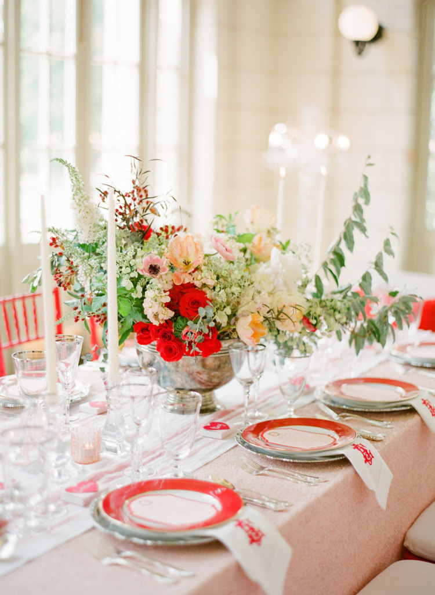
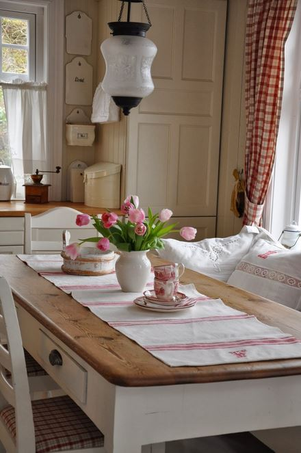

.png)
.PNG)
.PNG)
.PNG)
.PNG)
.PNG)
.JPG)
.JPG)
.PNG)
.PNG)


source
It’s February…the month of love, and romance, and valentines. What better time to see a little eye candy with some pink, right?
It’s everywhere.
source
Unfortunately, I have a slight problem with showing you all of this….
I don’t like pink. 🙁
I really never have. I don’t remember wearing it at all as a child. There is not one dab of it inside our house, and if you read the post on our master bedroom closet, you saw there is no pink in all of my wardrobe.

Even after having two sons, I never bought our daughter pink clothing. I think she might have had one pink outfit as a toddler. And her nursery decor? Yellow walls, white furniture, and all the linens were white with a red cherry print. 🙂
So this post is definitely for you. (My mother has probably fallen out of her chair at the sight of all this pink on the blog today, since she knows how I feel about the color.)
But that doesn’t mean that I don’t think these rooms are pretty. On the contrary, I do think they are very pretty. They look very feminine, but my tastes run towards more tailored spaces for our family. I like rooms that I feel both men and women would be comfortable in. But if you are a fan of pink and pretty, you might want to check out some of the rooms by Tracey Rapisardi, like the one below. She is one of the queens of pretty! 🙂
If I were to do a room in pink, it would have to be a little girl’s room like one of these.
You may remember this pink stripe room from this year’s HGTV Dream Home.
(Have you entered to win it?)
If we had on old Victorian home, pink would be quite fitting for the exterior.
Or…if we had this cute little cottage in Seaside, I wouldn’t mind it being the color of cotton candy. (By the way, the name of this cottage is Precious. 🙂 )
And Precious happens to be the guest cottage that goes with this pink home…Savannah Rose.
Now there is one color combination with pink, that I would consider using for a girl’s room in this house. And I probably like it because it seems more tailored….hot pink with navy.
I like that combination with a lot of white for contrast.
You might remember that our daughter’s dorm room was done in hot pink, navy, and white last fall. (She still doesn’t wear much pink, but there is certainly pink in her decorating! 🙂 )
Last December, Talbots’ catalog featured a page with all of this clothing. I loved the combinations…tailored and feminine…and seriously thought about getting the vest and gloves (and perhaps the sweater and skirt. 🙂 )
Maybe there is hope for some pink in my life yet!
So…do you and your home wear pink?
We’d love to know. 🙂


.PNG)
I thought I was probably the only female on the planet who did not like pink…….
Give me red ANY day….
The rooms that you showed were pretty though!
I loved the description of your daughter’s room…yellow with white and cherries…how much cuter could it get?
Blessings,
J
———————————————————————-
You are not alone. 🙂 I am happy you liked our daughter’s nursery. It was a fun room to do. (And I still haven’t been able to part with her baby bed.)
Kelly
Oh, my! I love pink!…not so much in decorating my house now but I wear it even in the winter. My daughter’s room was very pink in the 90s, even pink carpet. I might would use it in my house but I feel it is probably a bit much for my husband….even though he will wear pink shirts for me. (I do remember that you had no pink in your closet. My closet is nothing like my decorating. Should it be?) Please don’t tell me that you don’t like Lilly Pulitzer!!!
——————————————————————–
I do like Lilly- especially in the spring and summer. Such happy colors and prints!
Kelly
Gotta rock the February décor of red and pink hues! Have to say it was one of my favorite colors to wear, growing up. I still do love accents of the color especially in fashion. Would have to agree with you here, though, not really liking many of the examples posted. (Again, except for the clothes.) But, I do like a subdued pink toile, or a pop of pink in a room, say, a chair print or even just a throw. It is a lovely pick-me-up color wherever it may be found and very flattering in some shade, to most all of us. And, give me a pink peony or bunch of pink tulips for any Valentine’s Day!
———————————————————————
If I had a little girl’s room to do, perhaps pink could make its way in there. Definitely liking pink tulips these days!
Kelly
I’m not a pink person either. It’s not a color I gravitate towards either. On that note I do love a pink shirt or sweater paired with jeans and white tennis shoes. I have no pink in my home decor. The pictures you’ve posted are very pretty, just not a color that I would use. I agree that I like a more gender friendly colored home. I guess that my husband and son approve too. They are so easy going though, I could see them sitting in a pink room, on a pink sofa, with a large pink rug if it made me happy!
———————————————————————
How sweet of your husband and son! I love it!
Kelly
I love pink! Pink flowers especially!
——————————————————————-
A fan of the color! I can take pink if it is in “flower form.”
Kelly
Your post made me laugh, when I was little I had red hair and so does my daughter. I never owned anything red and never bought red for my daughter and I love red now. I do like a pale pink especially with navy.
Does this make us color challenged?
Have a great weekend.
Jeanne
——————————————————————–
Red hair? Yes, you may have a problem with red.:) I do like the navy-pink combo like you. It looks so classic!
Kelly
As the old saying goes, “A little dab will do ya” , it applies to pink. I like it but I have always thought it needed to be an accent. However, I am kind of in love with the pink beach houses. I also like the pink and yellow stripes on the pillows.
This was a fun post.
———————————————————————
I agree with you. It does work better as an accent color DiAnne. In my mind, beach houses can wear almost any color…which makes it fun to decorate them.
Kelly
Not a big fan of pink myself. It has grown on me so little over the years that it would have to be a “super” pale shade – like in the little girl’s room. I agree, however, the other rooms are pretty-just not for me. : )
——————————————————————–
I think there are many of us who are in the same boat with our taste in pink. It’s pretty to look at – just not in our own homes. 🙂
Kelly
Yes, our master bathroom wears pink wallpaper, it’s a pretty fuschia pink with green, grey, a touch of yellow floral (Donna Dewberry’s Roses pattern.). Everyone who uses it, loves the colors even the men. Our fixtures, tile, shower and window curtains are white with a couple of grey rugs on the white floor tile.
It’s refreshing to the eye. When I mention changing the wallpaper, my 25 year old daughter asks to keep it longer. I am thinking about a change in the near future
when we repaint the whole house again starting this spring….it may be gone this time next year……
The rest of my house has no pink. I do wear pink because my hair and skin look pretty in that color. I do love your red you use throughout your house, wish I could be that brave. Happy Valentines Day to red and pink!
————————————————————————–
Your bathroom sounds pretty Joyce. And how wonderful that your daughter wants you to keep it!
Kelly
Isn’t it interesting how we all respond differently to colors. While I like pink, I prefer to use it for just a ‘pop’ of color whether in clothing or decorating. Red and yellow and white have become the colors of choice these days.
Can’t wait to see your post (hopefully with lots of red) for Valentine’s. Red is so energizing and just makes me Happy.
——————————————————————
Color choices are such personal things, and you are right that we all respond differently to different colors. Love red and yellow and white together – that is a happy combo to me. Valentine’s around here is red all the way!
Kelly
I have used touches of pink in my girls’ bedrooms when they were small, but never since. I think I must have a horrible Pepto Bismal memory planted in my brain because I actually feel nauseous when I see it on a large scale. Luckily I never had bad red, blue, or green medicinal experiences except for the minty green on hospital walls..can’t use that one either.
——————————————————————-
Too funny! Color does attach itself to memory – not quite as strong as smell does, but it most certainly can do it. I vividly remember a hot pink and yellow floral my mother used in the bedroom for my sister and me, and the room had pale yellow walls. I can’t use that minty green either – it was painted on every single classroom here for over 2 decades!
Kelly
This post and the comments have all been such fun to read. As a pre-teen I was big on pink and white stripes in my bedroom, but then I saw the “light”–now there is no pink in my closet or house. The only pink I enjoy is a vase full of pink tulips or pink roses. My preferences tend to decor/fashion looks that are tailored, symmetrical, non-pastels and little or no green, yellow, gray, beige, lavenders. All that said I could wear the Talbots gear in last photo.
———————————————————————-
I am loving all the comments too. Such fun! With the exception of the green and yellow, you and I must have the same taste! (Although we never had pink and white stripes in anything growing up.)
Kelly
I have to say in the 80’s, back in the day of mauves and blues, some did adorn our home. Our gray cape cod’s exterior was given abundant doses of pink flowers every summer. I blame those dreamy Nantucket books of mine, that were abundant with seaside cottages, white picket fencing and pink floral goodness. You know those books! My girls and I wore it a bit, and yes, they had white iron beds, adorned with bits of pink too. For workouts I was known as the gal with the pink top (Ha!) and yes, I have a pink cruiser bike from no other than our beloved Target, that I received on my 50th Birthday. Ha…Are you feeling a little nausea yet? Truly red has slowly been replacing it for about the last 8 years. No wonder, I would love your blog. 🙂 I currently drive a red magnum, sport red toggle and puff coats. Adore Stewart or red and black buffalo plaids. Our cape cod is now adorned with red accent doors, flowers, accent summer cushions. Our new out building is done in white wicker with red and black accent. I have to say, this post was still quite pleasing and yes, I too could have ordered a few pieces from Talbots as well. I am blonde and fair like you and find if I wear red or pink, it always gives my skin a more rosy appearance. Come on Kelly, embrace a little more pink and jump to the other side…maybe just for Valentines? Hey, your boys are on the West coast now, so make this holiday a girly one? Maybe some red and pink together? I’m putting in a request for a Kelly table scape fix. You never disappoint. I love your blog. Hope your week ahead is rosy! Cheesy I know, but I couldn’t resist! 🙂
————————————————————————-
You were definitely “team pink” at one time Debra! But I am glad you have seen the light to come over to team red. LOL I am afraid pink did not make it to our Valentine’s table. The holiday is just another excuse for me to pull out all the red. 🙂 Maybe next year. (If our daughter had been here, I might have been more likely to go with it then.)
Kelly
Hi Kelly
I loved all of your pretty pictures ~ and I guess I am in the middle of the road on the pink issue. I don’t decorate with pink, I like red and yellow and green. {no blue either]
But when my twin girls were little, one wore pink and one wore purple 🙂
I seldom wear pink but I have one hot pink tunic and every time I wear it I get complimented so maybe hot pink is a good color for me.
{I just realized I do decorate with pink, lol, my granddaughters’ room at my house is green with yellow carpet AND white and pink quilts:-)}
———————————————————————
How funny that you are just realizing that Sue! LOL Now I would love pink and white quilts. That would be so pretty!
Kelly
Kelly,
I have to laugh…I also love a more tailored look, and being a redhead, pink just wasn’t my color. That said, in the late 80’s there was a trend towards chintz. I painted our master bedroom this soft pink, bought the Ralph Lauren Alison duvet cover (loaded with pink cabbage roses and blue flowers) and Mr. B. used to say that room was proof to him he was comfortable with his masculinity since that was definitely a girl room!
Fun post.
xo,
Karen
——————————————————————
Loved that Alison print! Your husband is right. That was a girly-girl room. I have forgotten all about that trend in the late 80’s,and we had 2 sofas in our home that wore a giant floral with pink roses in it. How in the world could I forget that??? I even put up…dare I say it…border…that matched it! Boy have my tastes changed. I guess the older you get the wiser you get, and you are better able to distinguish between something trendy and something classic (or at least I hope we do!)
Kelly
No my home doesn’t wear a drop of pink either and neither do I. Great pictures though.
——————————————————————–
Great minds think alike Marty!
Kelly
I love pink but not so much for decorating! My daughter had a lavender room at her request, then a deep blue! I enjoy pink Tulips in the spring and I love the Lily Pulitzer look of the preppy pink and green but other than that, I prefer blues!
———————————————————————-
Bring on the pink tulips! I think we all would be happy with them. Love Lily…in small doses. 🙂
Kelly
I AM CRAZY about pink. I am also a redhead which is taboo for wearing pink, but I do anyway. I love pink leather shoes and purses (Coach for example). Soft pink sweaters, pink on babies, etc. Sucker for pink. BUT, I do not decorate with it. My husband would yell. LOL
———————————————————————
That’s funny! Kaye Ann I think you are smitten with the color! And I understand your husband’s thoughts of it in your home. 🙂
Kelly
I like pink…not love it and I certainly wouldn’t know how to decorate using that particular color but I do love how they used pink and green through out the house. I am trying to incorporate red with our neutral of brown in my house and find I am having a hard time. Seems I use the same thing (pillows) and I want to do more.
————————————————————————
How about painting some picture frames red to add the color to your walls in a small dose?
Kelly
Hi Kelly, I’ve always preferred a higher contrast of colors – like red and white vs. pink and white. Just me. So it never really occurs to me to buy anything pink, including clothes. Thanks for sharing these lovely pictures of pink; I enjoyed them. If I was going to decorate with pink, it would be like your photographs, hopefully.
———————————————————————–
I think it is the contrast that I am drawn to Anne. Thanks for pointing that out! The rooms of pink that I like are the ones with the pink contrasted with white. Maybe it has something to do with my poor vision! 🙂
Kelly
Kelly,
I really don’t like pink at all. I refuse to wear or own anything pink. My students even know this about me. It borders on, dare I say…hate almost. I love GREEN of course and like orange, purple red and all neutral colors. But NO pink. My daughter wore purple as a baby and neutral colors mostly. Her room is purple and green. She loves all shades of blue. Her playroom is aqua and gray. Our home is neutral colors with splashes of color. Our master bedroom is blue, my husbands favorite color but we have green and red evident in every room. Thanks for the inspiring photos. The second to last one with the exquisite monograms is my favorite. Take care!
———————————————————————
I am right there with you on my feelings about the color Dawn. I wonder why we feel this way? Sounds like a therapy session is needed. LOL
Kelly
I was never a fan of pink. I have 4 daughters and rarely dressed them in pink. About 5 years ago they started pointing out that I have a lot of pinks in my wardrobe —- hmmm — they were right. No pale, pastel pinks but lots of raspberry and coral. Guess I’ve finally gotten in touch with my feminine side. 🙂
I do not have any pink in my house but, who knows, that may change someday.
——————————————————————
Four daughters and rarely dressed them in pink? That’s unusual Jan. I do love raspberry…that is a pretty color, and I had one satin “party blouse” in that color a few years ago. Yes, you have gotten in touch with your feminine side! 🙂
Kelly
I had to laugh at your “no pink” daughter…me too. After two boys, people thought I would have my little girl all in pink, but it seemed so predictable…her room was white and yellow with pops of turquoise.She has beautiful blue eyes, so I always dressed her in blue. I am a red lover like you, but the older I get the more I like to wear pink, I agree with Mimi, it gives you a healthy glow.
I have no pink in my house either.I also have very little blue…a few accents of colbalt, but mainly red, green and yellow.I did enjoy looking at the pink rooms. You did a post on blue rooms(very pale) a while back that I enjoyed too, just could not live with it.
——————————————————————-
I am glad to know that my daughter is not the only one who did not have her share of pink as a child. 🙂 Blue to bring out your daughter’s eyes. How pretty!
Kelly
So, I guess you weren’t a Phi Mu in college! The Phi Mu house at FSU used to have pink wall-to-wall carpet and we wore pink taffeta rush dresses!
Now, even though I love pink, I don’t use it in my house. It’s a hard color to decorate with, especially with a lot of men-folk running around. I’m more on your tailored/red team!
——————————————————————-
Nope – no Phi Mu here. I think I would have avoided it on the basis of color alone! LOL (although pink taffeta dresses are beautiful.) We are glad to have you on our tailored – red team Leslie Anne. 🙂
Kelly
I really don’t like pink either. All of these pictures are great…pretty to look at…but I couldn’t live there! I am a mom to three grown sons…there was no pink allowed. Although growing up I had a pink bedroom….lots of pink, bedspread, walls, a chair…think I’m all pinked out! And that was a long, long time ago. I don’t wear pink either. Although I wouldn’t mind a pink top…but that would be about it. So, unless some one gives me pink flowers…I do love hot pink geraniums….there won’t be any pink found here. 😉
———————————————————————-
With three sons, I can understand your not using the color. And yes, you probably used up your allotment of pink growing up! Sounds like you had a lot!
Kelly
Ahh, my love of pink and lime green is almost as strong as my love for red. Both colors are my favorite.
——————————————————————-
You just like that side of the color wheel Jean! We all need to be a little more like you and give pink a chance. 🙂
Kelly
As a pink lover I loved this post. I also am surrounded by boys at home – and grew up with two brothers and no sisters. I need a little raspberry pink and girl to take shopping!
xo, Lissy.
——————————————————————-
Oh yes you do Lissy! I wish I could loan you my daughter for awhile since she LOVES to shop. You have had more than your share of “masculine” surrounding you. I can understand the need for some pink in your life. 🙂
Kelly
I just happened to wear a pink vest and scarf combo to school today! I have a pink coat, a pink wallet, pink jammies, etc. I love to WEAR pink–I think it gives almost everyone a healthy glow–but it’s not a color I would use to decorate my home. (Unless you count the late 80s when my entire house was done in a country blue/mauve combo…but that was also the time period when I had permed hair and high-waisted jeans, so what did I know? Ha!)
——————————————————————–
Too funny Mimi!! You sound like a true lover of pink. 🙂 And no I do not count the decorating trends of the 80s – in fact I try to forget them! LOL
Kelly
You don’t like pink???! Okay, I am so crazy about you that I will have to let that slide! My granddaughter’s room at my house is painted pale pale pink with pink buffalo check duvets on the white twin beds. Funny though, her favorite color is blue! Actually, I totally agree with you about things looking tailored but I am glad you did not influence you sweet daughter on the love of pink!
Happy almost Friday!
——————————————————————–
Katrina, thank you for “letting me slide.” 🙂 I bet your granddaughter’s room is precious. If it has buffalo check duvets (even if they ARE pink) I would love it! I think my daughter likes pink just to aggravate me. LOL
Kelly